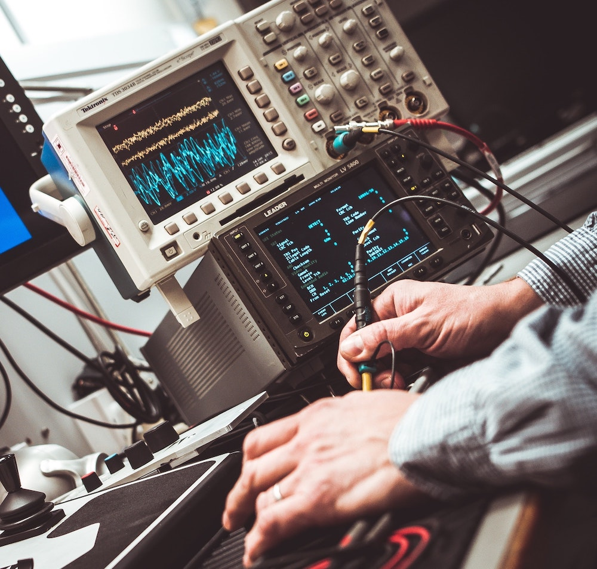

Me

Electromechanics
 Computer Science
Computer Science
 Other
Computer Science
Other
Other
Computer Science
Other
I am Martin Michotte, born on the 25th of march 1995 in Belgium.
I love to learn new things and I always try to find solutions for all kind of problems I or others might have. I am used to work within a team and have worn many hats such as team-leader, scrum-master, consultant.
Having a degree in electromechanics and in computer-science, gives me the ability to have a good understanding of technical problems and allows me to translate them more easily into technical or software solutions.
Discover more about my work, download my CV or get in touch with me.
I graduated in electromechanics on the 22th of June 2018 from EPHEC as the "Major of Promotion" with "The Greatest Distinction".
During those years I had the opportunity to contribute to the Shell Eco Marathon where a fellow student and I developed a custom ECU for our gas-powered prototype car.
I also worked with a SLG Classic Cars for a 15 weeks internship. I helped them build and optimize a 2CV car for the 24h 2cv race of Spa-Francorchamps.
I am currently in my last year of a bachelor degree in computer-science at EPHEC.
Since mid-February I've been on internship at BStorm and I am really enjoying it. The level of requirement is much higher than I thought but this allows me to learn a lot of new concepts and techniques.
This last study year is coming to an end and I will probably be graduated at the end of June 2021.
Appart from work, I am an amateur cyclist and hope to discover the world on my bike.
I love thinkering on various projects that are usually based on software or electromechanical challenges.
Being very involved in scouting, I deeply respect nature and care about knowledge transmission.
Connect with me on Strava.